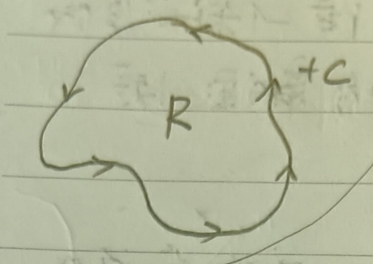
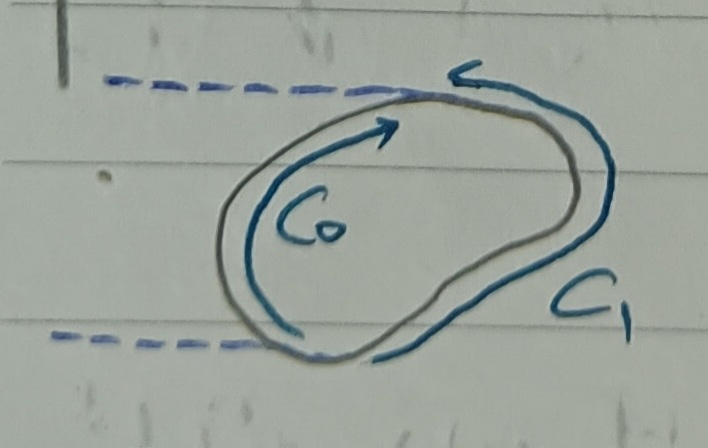

這份筆記是關於高斯定理、散度定理與格林定理的介紹與證明。
高斯定理
註記 1
我們底下記\(R\)為一\(\mathbb{R}^2\)上的區域，並令\(+C\)是\(R\)正方向的邊界(我們在這裡先手動選定一個方向為正方向，見下圖1)。
回想 2
由這裡的定理11，我們知道\(R\)的面積\(A\)可以寫成 \[ A=\iint_R dxdy=\int_{+C}xdy \]
定理 3：高斯定理 (Gauss' Theorem)
條件如上，有 \[ \iint_R[f_x(x,y)+g_y(x,y)]dxdy=\int_{+C}f(x,y)dy-g(x,y)dx \]
註記 3-1
高斯定理可以記為 \[ \iint_R dL=\int_{+C}L \]
證明：先考慮比較好的\(R\)，假設每一條和座標軸平行的直線都只和\(C\)有至多兩個交點，並假設\(g(x,y)=0\)(見下圖2)。
則原定理轉為說明 \[ \iint_R f_x(x,y)dxdy=\int_{+C}f(x,y)dy \] 在上圖2中，令\(\eta_0\)是使\(y=\eta_0\)和\(C\)有交點的最小數，而\(\eta_1\)是使\(y=\eta_1\)和\(C\)有交點的最大數。並且對於\(\eta_0\leq\eta^*\leq\eta_1\)，令\(y=\eta^*\)和\(C\)相交於\(x_0(\eta^*)\)和\(x_1(\eta^*)\)，其中\(x_0(\eta^*)\leq x_1(\eta^*)\)。則 \[ \begin{aligned} \iint_R f_x(x,y)dxdy&=\int_{\eta_0}^{\eta_1}dy\int_{x_0(y)}^{x_1(y)}f_x(x,y)dx\\ &=\int_{\eta_0}^{\eta_1}f(x_1(y),y)-f(x_0(y),y)dy\mbox{ (微積分基本定理)}\\ &=\int_{\eta_0}^{\eta_1}f(x_1(y),y)dy-\int_{\eta_0}^{\eta_1}f(x_0(y),y)dy \end{aligned} \] 接著，我們考慮兩個有向弧\(+C_0\), \(+C_1\)，定義為 \[ \left\{ \begin{aligned} +C_1&:x=x_1(t), y=t, \eta_0\leq t\leq\eta_1\\ +C_0&:x=x_0(t), y=t, \eta_0\leq t\leq\eta_1 \end{aligned} \right. \] 見下圖3。
故 \[ \iint_R f_x(x,y)dxdy=\int_{+C_1}f(x,y)dy+\int_{-C_0}f(x,y)dy=\int_{+C}f(x,y)dy \]
而對於一般的\(R\)。可以把\(R\)切成很多塊，使得每一條與座標軸平行的直線都只和一區有至多兩個交點，則依然會有 \[ \iint_R f_x(x,y)dxdy=\int_{+C}f(x,y)dy \] 例如在下圖4中\(R_1\)和\(R_2\)的共用邊的部分就會消掉。
然後再考慮\(f(x,y)=0\)的狀況，然後橫著切，也會有一樣的結論(見下圖5)。
然而，這裡會多出一個負號。因為\(\int_{C_0'}+\int_{-C_1'}\)的方向(順時針)會和\(\int_{+C_1}+\int_{-C_0}\)的方向(逆時針)相反，即 \[ \iint_R g_y(x,y)dxdy=\int_{-C}g(x,y)dx \]
於是，總的來說我們有 \[ \iint_R[f_x(x,y)+g_y(x,y)]dxdy=\int_{+C}f(x,y)dy-g(x,y)dx \] QED
註記 3-2
令\(s\)為弧長，則 \[ f(x,y)dy-g(x,y)dx=\left[f(x,y)\frac{dy}{ds}-g(x,y)\frac{dx}{ds}\right] \] 令\(\dot{x}=\frac{dx}{ds}, \dot{y}=\frac{dy}{ds}\)，則高斯定理可寫為 \[ \iint_R[f_x(x,y)+g_y(x,y)]dxdy=\int_{+C}(f\dot{y}-g\dot{x})ds \]
散度定理
定義 4：向量場 (Vector Field)
我們稱函數 \[ A(x,y)=(f(x,y),g(x,y))=f(x,y)\mathbf{i}+g(x,y)\mathbf{j} \] 為一向量場，其中\(\mathbf{i}=(1,0), \mathbf{j}=(0,1)\)。
定義 5：散度 (Divergence)
給定一向量場\(A\)如定義4，則定義\(A\)的散度為 \[ \mbox{div } A=f_x(x,y)+g_y(x,y) \]
定理 6：散度定理 (Divergence Theorem)
給定\(\mathbb{R}^2\)上的向量場\(A=(f(x,y),g(x,y))\)，有 \[
\iint_R\mbox{div }Adxdy=\int_{+C} A\cdot nds
\] 其中\(n\)為\(+C\)的法向量(我們稍後會仔細定義這件事)。
證明：由這裡的註記3-1，我們知道\(t=(\dot{x},\dot{y})\)是長度為\(1\)且指向曲線的切線方向的向量，且是指向\(s\)遞增的方向(注意這裡的\(\dot{x},\dot{y}\)定義和該處有些微不同)。現在我們考慮法向量\(n=(\dot{y},-\dot{x})\)，則\(n\)會指向\(R\)的右邊(見下圖6)。
令\(n=(\xi,\eta)\)，其中\(\xi=\frac{dy}{ds}, \eta=-\frac{dx}{ds}\)，並令\(\theta\)是\(n\)和正\(x\)軸的夾角，則易知\(n\)的長度也是\(1\)且\(n=(\cos\theta,\sin\theta)\)(見下圖7)。
給定函數\(h(x,y)\)，由這裡的註記17我們知道\(h\)在\(n\)方向的方向導數為 \[ \frac{dh}{dn}=h_x\cos\theta+h_y\sin\theta=h_x\xi+h_y\eta \] 於是， \[ \begin{aligned} \frac{dx}{dn}&=1\cdot\xi+0\cdot\eta=\xi=\frac{dy}{ds}\\ \frac{dy}{dn}&=0\cdot\xi+1\cdot\eta=\eta=-\frac{dx}{ds} \end{aligned} \] 於是，由註記3-2有 \[ \begin{aligned} \int_{+C}f(x,y)dy-g(x,y)dx&=\int_{+C}\left[f(x,y)\frac{dy}{ds}-g(x,y)\frac{dx}{ds}\right]ds\\ &=\int_{+C}\left[f(x,y)\frac{dx}{dn}+g(x,y)\frac{dy}{dn}\right]ds\\ &=\int_{+C}A\cdot nds \end{aligned} \] 最後，由高斯定理(定理3)，即得 \[ \iint_R\mbox{div }Adxdy=\int_{+C} A\cdot nds \] QED
註記 6-1
在高斯定理中令\(a(x,y)=-g(x,y), b(x,y)=f(x,y)\)，則 \[ \iint_R(b_x-a_y)dxdy=\int_{+C}adx+bdy=\int_{+C}\left(a\frac{dx}{ds}+b\frac{dy}{ds}\right)ds=\int_{+C}B\cdot tds \] 其中\(B=(a,b)=(-g,f)\), \(t=(\dot{x}, \dot{y})\)。可以發現\(B\)可以由\(A\)逆時針旋轉\(\pi/2\)得到。
格林定理
定義 7：拉普拉斯算符 (Laplacian Operator)
我們將函數\(w(x,y)\)的拉普拉斯算符定義為 \[ \Delta w=w_{xx}+w_{yy} \]
定理 8：格林定理 (Green's Theorem)
對於\(\mathbb{R}^2\)上的\(R\)及函數\(w(x,y), u(x,y)\)，有 \[
\iint_R(u\Delta w-w\Delta
u)dxdy=\int_{+C}\left(u\frac{dw}{dn}-w\frac{du}{dn}\right)ds
\] 其中\(n\)和散度定理(定理6)中一樣是指向\(R\)右邊的法向量。
證明：在散度定理中令 \[ f(x,y)=a(x,y)u(x,y), g(x,y)=b(x,y)v(x,y) \] 則 \[ f_x+g_y=(au_x+bv_y)+(a_xu+b_yv) \] 於是，由散度定理， \[ \iint_R(au_x+bv_y)dxdy=\int_{+C}\left(au\frac{dx}{dn}+bv\frac{dy}{dn}\right)ds-\iint_R(a_xu+b_yv)dxdy \] 接著，令\(u=v, a=w_x, b=w_y\)，有 \[ \iint_R(u_xw_x+u_yw_y)dxdy=\int_{+C}u\left(w_x\frac{dx}{dn}+w_y\frac{dy}{dn}\right)ds-\iint_R u(w_{xx}+w_{yy})dxdy \] 又由鏈鎖律， \[ \frac{dw}{dn}=w_x\frac{dx}{dn}+w_y\frac{dy}{dn} \] 故 \[ \iint_R(u_xw_x+u_yw_y)dxdy=\int_{+C}u\frac{dw}{dn}ds-\iint_R u\Delta wdxdy \] 將\(u\)和\(w\)對換，會有 \[ \iint_R(w_xu_x+w_yu_y)dxdy=\int_{+C}w\frac{du}{dn}ds-\iint_R w\Delta udxdy \] 上下兩式的左式相等，於是便有 \[ \iint_R(u\Delta w-w\Delta u)dxdy=\int_{+C}\left(u\frac{dw}{dn}-w\frac{du}{dn}\right)ds \] QED
高斯定理與雅可比行列式
定理 9
給定\(xy\)平面上的區域\(R\)及\(uv\)平面上的區域\(R'\)，其中\(u=u(x,y)\), \(v=v(x,y)\)，\(R\)和\(R'\)相互對應(見下圖9)，則給定函數\(f\)，有 \[
\iint_{R'}f(u,v)dudv=\iint_R
f(u(x,y),v(x,y))\frac{\partial(u,v)}{\partial(x,y)}dxdy
\] 其中\(\frac{\partial(u,v)}{\partial(x,y)}\neq
0\)是雅可比行列式，見這裡的定義4。
(這個定理是這裡的定理3，這裡用高斯定理再證明一次。)
證明：令\(R\)和\(R'\)的邊界分別為\(C\)和\(C'\)。令\(L=a(x,y)dx+b(x,y)dy\)，則由高斯定理有 \[ \iint_R dL=\int_{+C}L \] 對照高斯定理，有 \[ dL=(b_x-a_y)dxdy \] 假設\(C\)可被表為 \[ \left\{ \begin{aligned} x&=x(t)\\ y&=y(t) \end{aligned} \right.,\alpha\leq t\leq\beta \] 且 \[ \begin{aligned} \int_{+C}L&=\int_{+C}adx+bdy\\ &=\int_{+C}\left(a\frac{dx}{dt}+b\frac{dy}{dt}\right)dt\\ &=\int_\alpha^\beta\frac{L}{dt}dt \end{aligned} \] 現在考慮\(u=u(x,y), v=v(x,y)\)，假設雅可比行列式\(\frac{\partial(u,v)}{\partial(x,y)}>0\)。則我們可以將\(u,v\)寫成\(u=u(x(t),y(t)), v=v(x(t),y(t))\)。接著，我們令 \[ L=Adu+Bdv=A(u_xdx+u_ydy)+B(v_xdx+v_ydy)=adx+bdy \] 對比可以得到 \[ a=Au_x+Bv_x, b=Au_y+Bv_y \] 又 \[ \frac{L}{dt}=a\frac{dx}{dt}+b\frac{dy}{dt}=A\frac{du}{dt}+B\frac{dv}{dt} \] 故 \[ \int_{+C}L=\int_\alpha^\beta\frac{L}{dt}dt=\int_\alpha^\beta Adu+Bdv=\int_{+C'}L \] 但由高斯定理有 \[ \int_{+C'}L=\iint_{R'}dL=\iint_{R'}(B_u-A_v)dudv \] 而 \[ \begin{aligned} b_x-a_y&=(Au_y1+Bv_y)_x-(Au_x+Bv_x)_y\\ &=(B_u-A_v)(u_xv_y-u_yv_x) \end{aligned} \] 故 \[ \begin{aligned} \iint_{R'}dL&=\iint_{R'}(B_u-A_v)dudv\\ &=\iint_R dL\;\;\left(\int_{+C}L=\int_{+C'}L\right)\\ &=\iint_R(b_x-a_y)dxdy\\ &=\iint_R(B_u-A_v)\frac{\partial(u,v)}{\partial(x,y)}dxdy \end{aligned} \] (最後一步注意\(\frac{\partial(u,v)}{\partial(x,y)}=u_xv_y-u_yv_x\))。令\(A=0\), \(B_u=f(u,v)\)就有 \[ \iint_{R'}f(u,v)dudv=\iint_R f(u(x,y),v(x,y))\frac{\partial(u,v)}{\partial(x,y)}dxdy \] QED